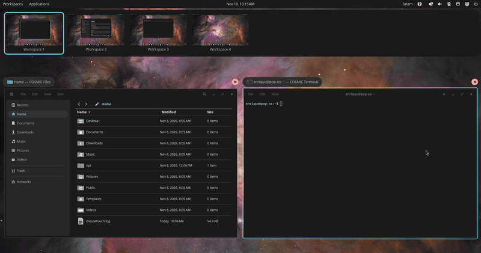

Swipe between workspaces
inside the COSMIC overview.
On Pop!_OS a 3- or 4-finger touchpad swipe switches workspaces, but does nothing while the workspace overview
(Super+W) is open. This patch makes the overview follow your fingers, like Mission Control on macOS:
the workspaces slide with you and land on the one you aim for. It installs without sudo and leaves your system packages alone.

What changes
Only the workspace overview. Outside it, COSMIC keeps handling the swipe exactly as before.
Install
For Pop!_OS 24.04 with COSMIC, x86_64 or ARM. The patched overview has to match your exact COSMIC version, so the installer picks the build for the version you have, checks it and refuses if there is none.
1. Check your COSMIC version
dpkg-query -W cosmic-workspaces| Version shown | Revision | Status |
|---|---|---|
1.0.12~1790783807~24.04~cb953ea | cb953ea | Supported (latest COSMIC at the time of writing) |
0.1.0~1765315332~24.04~954a45c | 954a45c | Supported (earlier COSMIC release) |
The last part of the version, after the final ~, is the revision. If yours is not listed, the installer stops without changing anything; see Help.
2. Install
curl -fsSL https://raw.githubusercontent.com/Devace-93/cosmic-overview-swipe/main/get.sh | sh- Downloads the build for your revision from the latest release and verifies its SHA-256 checksum.
- Puts it in
~/.local/opt/overview-swipe/and adds a small wrapper at~/.local/bin/cosmic-workspaces, which COSMIC starts instead of the system overview. - Restarts the overview. If it says your session does not look in ~/.local/bin yet, log out and back in once.
3. Use it
Press Super+W (or click Workspaces in the panel), then swipe with 3 or 4 fingers on the touchpad.
After a system update
When Pop!_OS updates COSMIC to a new revision, the wrapper notices and starts the stock overview, so nothing breaks; the swipe is just off. Run the install line again: it fetches the build for the new revision as soon as there is one.
curl -fsSL https://raw.githubusercontent.com/Devace-93/cosmic-overview-swipe/main/get.sh | sh -s statusRemove
Deletes the wrapper and the downloaded build and restarts the stock overview. Your settings file is kept.
curl -fsSL https://raw.githubusercontent.com/Devace-93/cosmic-overview-swipe/main/get.sh | sh -s uninstallBuild it yourself
Prefer to compile? The repository has the patch series per revision and a script that clones upstream at your revision, applies them and builds (needs Rust and a few -dev packages, about ten minutes).
git clone https://github.com/Devace-93/cosmic-overview-swipe
cd cosmic-overview-swipe
scripts/overview-swipe.sh deps # build dependencies (sudo apt)
scripts/overview-swipe.sh build # upstream at your revision + patches
scripts/overview-swipe.sh try # same wrapper as the installer; undo: untrySettings
Optional. The installer creates ~/.config/cosmic-overview-swipe.env with the settings commented out. Edit it, then restart the overview:
curl -fsSL https://raw.githubusercontent.com/Devace-93/cosmic-overview-swipe/main/get.sh | sh -s restart# finger travel (mm) per workspace; higher = slower. Default 20.
COSMIC_WORKSPACES_SWIPE_MM=35
# earlier COSMIC (954a45c) only: stop at the first/last workspace
# instead of wrapping around. Newer COSMIC follows its own setting.
COSMIC_WORKSPACES_SWIPE_WRAP=0How it works
While the overview is open, COSMIC's compositor stops switching workspaces itself and hands the touchpad swipe to the overview, which until now did not listen. The patch adds that part to cosmic-workspaces, the program that draws the overview.
Troubleshooting
curl -fsSL https://raw.githubusercontent.com/Devace-93/cosmic-overview-swipe/main/get.sh | sh -s status
journalctl --user -b | grep -i cosmic_workspaces| Symptom | Check |
|---|---|
| "No build for cosmic-workspaces …" | Your COSMIC revision is newer or older than the releases. Nothing was changed. Watch the releases, or open an issue with the output of dpkg-query -W cosmic-workspaces. |
| Swiping in the overview does nothing | Run status. "Build for this revision: no" means COSMIC was updated: run the install line again. If the stock overview is running, log out and back in once. |
| Too fast or too slow | Set COSMIC_WORKSPACES_SWIPE_MM (default 20; 30–40 feels calmer on some touchpads) and run restart. |
| Goes the wrong way | It follows the touchpad natural scrolling setting in COSMIC Settings, like COSMIC's own swipe. |
| Magic Mouse swipes do nothing | Install MouseTouch 0.1.13 or newer, which follows COSMIC's horizontal or vertical layout. |
| I want the stock overview back | Run uninstall. Nothing else on the system was touched. |
Details, the patch series and test notes are in the repository. Questions or another COSMIC version: issues.